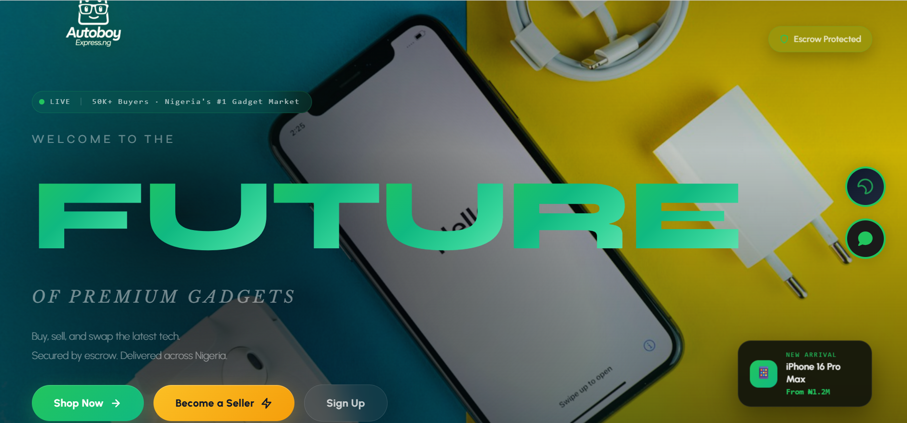

<div id="de_modal-content" class="container">
    <div class="row g-5">
        <div class="col-lg-8">
            
        </div>

        <div class="col-lg-4 de_project-info">
            <h3>AutoboyExpress</h3>
            <p>A verified marketplace app and website for buying and selling phones and gadgets, built on a Go backend for speed and reliability. The standout piece is the logistics layer: every order flows through a custom three-stop delivery pipeline — pickup from the seller, mandatory inspection at a warehouse checkpoint, then delivery to the buyer — with verification codes at each handoff to cut down on fraud in high-value resale. Order status syncs back to the app in real time over webhooks.</p>

            <div class="de_project-details">
                <div class="d-field">
                    <i class="fa fa-user-o"></i>Client: <span>AutoBoy Express (CAC-registered)</span>
                </div>
                <div class="d-field">
                    <i class="fa fa-file-text-o"></i>Type: <span>Full-Stack Development — Go, REST API, Mobile & Web</span>
                </div>
                <div class="d-field">
                    <i class="fa fa-calendar-o"></i>Year: <span>2026</span>
                </div>
                <div class="d-field">
                    <i class="fa fa-external-link"></i>Preview: <span><a href="https://autoboyexpress.com" target="_blank">autoboyexpress.com</a></span>
                </div>
            </div>
            <div class="spacer-30"></div>
            <blockquote>
                Integrates directly with a second in-house platform, FabsTech Express, for end-to-end delivery — two systems built to work as one.
            </blockquote>
        </div>
    </div>
</div>
